#INFO
난이도 : SILVER2
알고리즘 유형 : DP(다이나믹 프로그래밍)
문제출처 : https://www.acmicpc.net/problem/11722
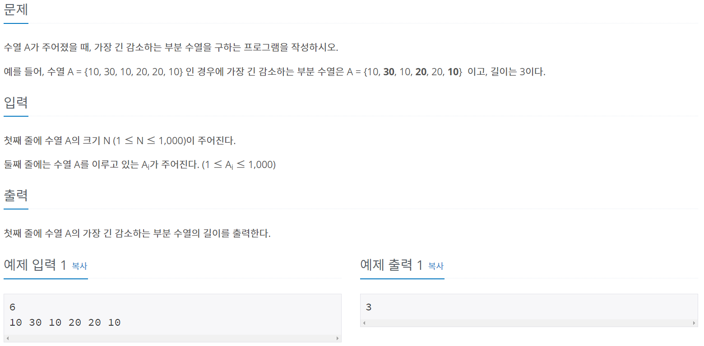
#SOLVE
수열을 저장할 arr[1001] 배열과, 감소 부분 수열의 길이를 저장할 dp[1001] 배열을 선언한다.
예를들어 dp[3] = 4 의 의미는 3번째 인덱스 원소의 최대 감소 부분 수열 길이가 4 이다. 라는 뜻이다.
우선, 초기의 모든 인덱스의 증가 감소 부분 수열의 길이는 원소 그 자체인 "1" 이기에 dp 값을 모두 1로 초기화 시킨다.
fill_n(dp, n + 1, 1);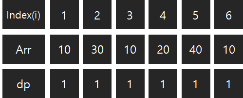
다음으로 생각해야 할 조건이 2가지 있다. 첫 번째 조건은 현재 인덱스의 값 보다 비교할 인덱스의 값이 더 커야 된다는 것이다. (Arr[i] < Arr[j]) 예를 들어 4번째 인덱스 값 (20) 과 , 2번째 인덱스 값 (30) 을 비교 한다고 가정해 보자. 20 < 30 이므로, 감소하는 부분 수열의 조건이 충족한다.
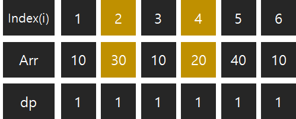
이번에는 4번째 인덱스 값 (20) 과 , 3번째 인덱스 값 (10)을 비교 한다고 가정해 보자. 20 > 10 이므로, 감소하는 부분 수열의 조건을 충족하지 못한다.
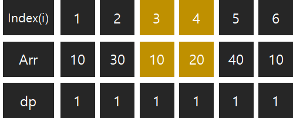
두 번째 조건은 현재 비교하고 있는 인덱스의 값을 감소 부분 수열에 추가 하는 것이 과연 최대 길이가 될 수 있느냐는 것이다.
6번째 인덱스인 10과 나머지 1, 2, 3, 4, 5 인덱스들을 비교하는 상황을 살펴보자. (편의를 위해 dp값들은 6번째 인덱스[현재 인덱스]를 제외하고 최적의 dp 값으로, 변경해 두었다.) 1번째 인덱스 { 10 } 길이 : 1 / 2번째 인덱스 { 30 } 길이 : 1 / 3번째 인덱스 { 30 10 } 길이 : 2 / 4번째 인덱스 { 30 20 } 길이 : 2 / 5번째 인덱스 { 40 } 길이 : 1
6번째 인덱스 (10) 과 1번째 인덱스 (10) 을 비교한다. 1번 조건 (현재 인덱스 값 보다 비교 인덱스 값이 더 커야한다.) 을 만족하지 않기에 패스한다.
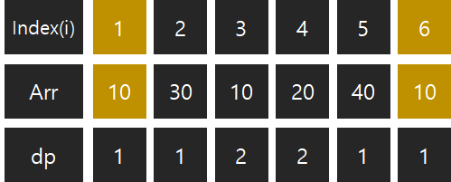
6번째 인덱스 (10) 과 2번째 인덱스 (30) 을 비교한다. 1번 조건은 만족하니, 2번 조건 (현재 비교하고 있는 인덱스의 값을 감소 부분 수열에 추가 하는 것이 과연 최대 길이가 될 수 있는가) 을 살펴보자. 현재 6번째 인덱스(10) 의 길이는 {10} 하나 기에 "1"이다. 따라서, 2번째 인덱스 (30) 을 부분 수열에 추가하는 것이 최적의 선택이다. 그러므로 dp의 값을 1 증가시킨다. {30 , 10}
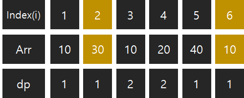 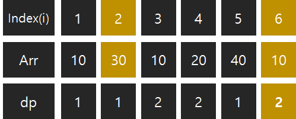
6번째 인덱스 (10) 과 3번째 인덱스 (10) 을 비교한다. 1번 조건을 만족하지 못한다. 패스한다.
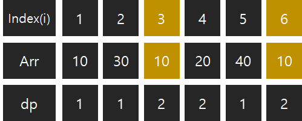
6번째 인덱스 (10) 과 4번째 인덱스 (20) 을 비교한다. 우선, 1번 조건은 만족시킨다. 다음으로 2번 조건을 살펴보자.
{30 , 10} 감소 부분 수열에 {20} 을 추가 하면 {30, 20, 10} 이 되기에, 4번째 인덱스 (20)을 추가하는 것이 최적의 선택이므로 2번 조건도 만족한다. 따라서 , dp의 값을 1 증가시킨다. { 30 20 10 }
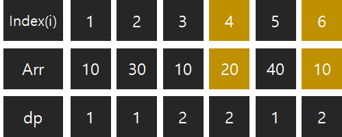 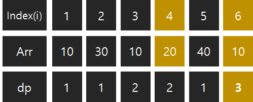
마지막으로 6번째 인덱스 (10) 과 5번째 인덱스 (40) 을 비교한다. 1번 조건은 만족시키니, 2번 조건으 살펴보자.
현재 감소 부분 수열의 길이는 { 30 20 10 } 으로 3이다. 그러나 만약 여기서 5번째 인덱스 (40) 을 부분 수열에 추가 시키면, { 40 10 } 으로 길이가 2로 오히려 줄어든다. 따라서 , 5번째 인덱스 (40) 을 감소 부분 수열에 추가하는 선택은 최적의 선택이 아니다. 그러므로 5번째 인덱스 값 (40) 은 패스한다.
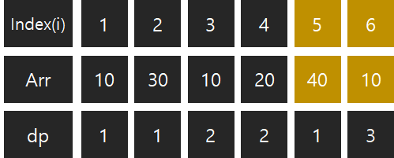
설명이 길어졌는데, 코드는 아주 단순하다.
for (int i = 1 ; i <= n ; i++) {
for (int j = 1 ; j <= i ; j++) {
if (arr[i] < arr[j] && dp[i] < dp[j] + 1) {
dp [i] = dp[j] + 1;
}
}
}
마지막으로 dp 배열 중에서 가장 큰 값을 찾아서 출력 해 주기만 하면 끝이다!
cout << *max_element(dp, dp + sizeof(arr)/sizeof(int)) << "\n";#CODE
#include <iostream>
#include <algorithm>
using namespace std;
int arr[1001];
int dp[1001];
int main() {
int n;
cin >> n;
for (int i = 1 ; i <= n ; i++) {
cin >> arr[i];
}
fill_n(dp, n + 1, 1);
for (int i = 1 ; i <= n ; i++) {
for (int j = 1 ; j <= i ; j++) {
if (arr[i] < arr[j] && dp[i] < dp[j] + 1) {
dp [i] = dp[j] + 1;
}
}
}
cout << *max_element(dp, dp + sizeof(arr)/sizeof(int)) << "\n";
return 0;
}